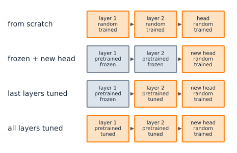
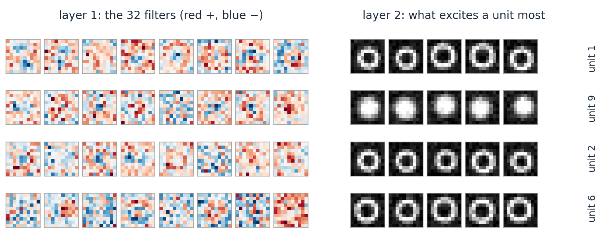
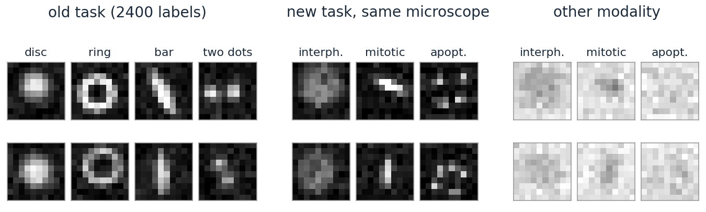
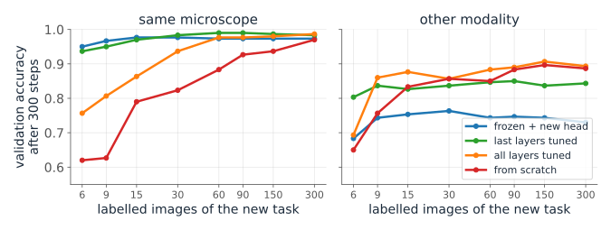
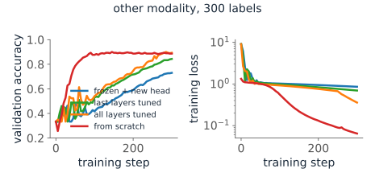
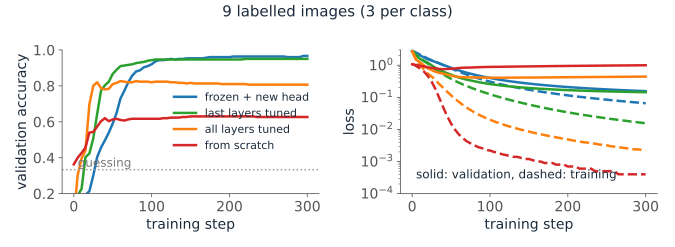

Transfer learning
About this lecture
The cell-networks day used networks trained by others (StarDist, Cellpose, SAM). The attention unit showed the two ways to reuse one: frozen features with a probe, or fine-tuning. This day is about doing that well on your images.
- What a pretrained network has learnt, layer by layer.
- Four options: use it as is, frozen backbone + new head, fine-tune some or all layers, or train from scratch.
- Which one wins depends on how many labels you have and how different your images are.
- A toy you can train in the browser: four small networks, side by side.
Slides titled The math give the formulas and proofs; the ideas are complete without them.
Why reuse a network?
- A segmentation or classification network has millions of weights. Learning them from scratch needs many thousands of annotated objects.
- You have dozens: annotating is slow, and needs an expert.
- But a network trained on another large image collection has already learnt what images are made of: edges, blobs, textures, shapes.
- Transfer learning: start from that network and spend your few labels on the part that is specific to your task.

What a pretrained network has learnt

- Layer 1: weighted sums of pixels: small local detectors (in large networks: edges and blobs at every orientation).
- Layer 2 combines them: units that answer to rings, others to discs: parts of objects.
- Deeper layers of large networks: textures, then parts, then whole objects. The early layers are general; the last ones are specific to the old task.
The toy: an old task and a new one

- Old task (pretraining): four shapes, 2400 labelled patches.
- New task: three cell phenotypes; only 6 to 300 labels. Validation: 300 other labelled patches.
- The new classes look somewhat like the old shapes (mitotic plate ~ bar, fragments ~ dots), as cells look somewhat like everyday objects.
Four options
| option | what is trained | weights trained (toy) |
|---|---|---|
| as is | nothing (only if the old task is your task) | 0 |
| frozen + new head (linear probe) | a new last layer on the frozen features | 51 |
| last layers tuned | layer 2 and the head; layer 1 frozen | 579 |
| all layers tuned | every weight, starting from the pretrained ones | 3811 |
| from scratch | every weight, starting from random | 3811 |
- Frozen: the backbone’s outputs never change: compute them once, then train a tiny classifier (fast; works on a laptop).
- Fine-tuning: keep training the pretrained weights on your labels, usually with a smaller learning rate.
- “As is” applies when the network already knows your classes: Cellpose on nuclei that look like its training nuclei.
The math: a linear probe
Frozen features \mathbf f(\mathbf x) \in \mathbb R^d (the outputs of the last frozen layer). The head is softmax regression:
p_k(\mathbf x) = \frac{e^{\mathbf w_k\cdot\mathbf f(\mathbf x) + b_k}}{\sum_j e^{\mathbf w_j\cdot\mathbf f(\mathbf x) + b_j}}, \qquad \mathcal L = -\frac1N\sum_n \log p_{y_n}(\mathbf x_n)
- \mathcal L is convex in (\mathbf w, b): one minimum, gradient descent finds it, no bad starts.
- Gradient for one example: \partial\mathcal L/\partial\mathbf w_k = (p_k - y_k)\,\mathbf f: the backpropagation of the neural-networks day, stopped at the head.
- Parameters: K(d + 1); toy: 3 \cdot 17 = 51. With N labels and K(d+1) \ll N it cannot memorise much.
Try it: four networks side by side
Few labels: the frozen probe wins

- 9 labels, 3 per class. Scratch memorises them (training loss 0.0004) and generalises badly: 63 %.
- All layers tuned starts well but drifts away from the useful pretrained features: 81 %.
- Frozen + new head: 51 weights cannot memorise much, and the features already separate the classes: 97 %.
How many labels for which option?

- Same microscope: frozen is best up to 15 labels; tuning the last layers is best from 30; all layers catch up at 150 to 300; scratch reaches 97 % only at 300.
- Other modality (dark cells on a bright background): the frozen features do not fit; the probe is stuck at 74 %, and tuning wins at every size.
The math: why fewer trained weights need fewer labels
A rough rule from learning theory: the gap between training and test error grows with the capacity of what is trained and shrinks with the number of examples N,
\text{test error} \;\lesssim\; \text{training error} + C\sqrt{\frac{\text{capacity}}{N}}
(for a linear head: capacity ≈ number of weights K(d+1)).
- Frozen: the training error may be higher (the features are fixed: bias), but the gap is small (51 weights: little variance).
- Fine-tuning all 3811 weights: training error → 0, but with 9 labels the gap is large.
- Starting from pretrained weights acts like a strong prior: fine-tuning moves little, so the effective capacity is smaller than the weight count suggests (next unit: low-rank changes).
When the new images look different
- The old features answer to bright blobs and rings. On dark cells on a bright background they respond to the background.
- With 300 labels the frozen probe still reaches only 73 %, and its training loss stays at 0.86: it underfits. More labels do not help a head whose features are wrong.
- Tuning all layers (89 %) adapts the features; it is as good as scratch here (89 %), and better with 9 labels (86 % against 76 %).
- The pretrained weights still help as a starting point, even when they are wrong as features.

A decision table
| your situation | first choice |
|---|---|
| the network was trained on images and classes like yours | as is; check on an annotated subset |
| few labels (tens), images like the pretraining images | frozen backbone + new head |
| hundreds of labels, similar images | fine-tune the last layers, then all, with a small rate |
| images unlike anything in pretraining | fine-tune all layers (or scratch with many labels) |
| very many labels and a very different domain | from scratch is fine, but rarely better than fine-tuning |
Always: a held-out annotated set of your images to choose, and a separate test set to report (the leakage unit).
Fine-tuning as pseudocode
start: W[1..L-1] = pretrained weights, W[L] = small random (new head, K outputs)
frozen: F = the first f layers (rate 0); T = the other layers
if f > 0: compute h = output of layer f for every training image, once
repeat for a number of steps:
batch = some labelled images (or their stored h)
forward through the layers in T, loss = cross-entropy
backward through the layers in T only
for every layer l in T: W[l] = W[l] − rate[l] · gradient[l]
keep the weights with the best validation score- Frozen layers cost nothing to train: their outputs are computed once and stored.
- The coding exercise trains a linear probe on frozen features and compares it with training from scratch.
Practical pitfalls
- Preprocess like the pretraining: the same intensity scaling, the same channel order, the same pixel size (a network trained at 0.3 µm per pixel sees different objects at 0.1 µm: rescale, as Cellpose’s diameter does).
- Validation with few labels is noisy: 9 validation images give accuracies in steps of 11 %. Keep a separate held-out set, or cross-validate.
- Early stopping matters more when fine-tuning: “all layers” was best at step 60 (82.7 %) and then fell to 80.7 %.
- Grey images into a colour network: copy the grey channel three times.

Summary
| Idea | In one line |
|---|---|
| Pretrained features | early layers general (edges, blobs), later layers specific to the old task |
| Frozen + new head | a linear probe on fixed features: few weights, few labels, convex |
| Fine-tuning | continue training pretrained weights; needs more labels and a small rate |
| From scratch | needs the most labels; with few it memorises |
| The choice | few labels → frozen; more labels or a different domain → tune more layers |
| Different images | frozen features underfit; pretrained weights still help as a start |
Next: fine-tuning strategies: which layers, which rates, and changing a network with very few new numbers.